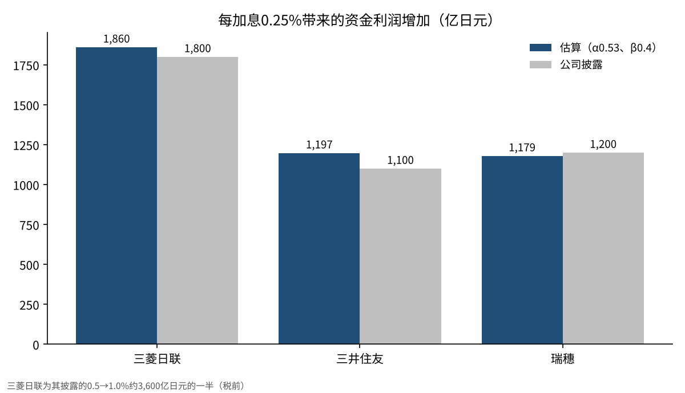
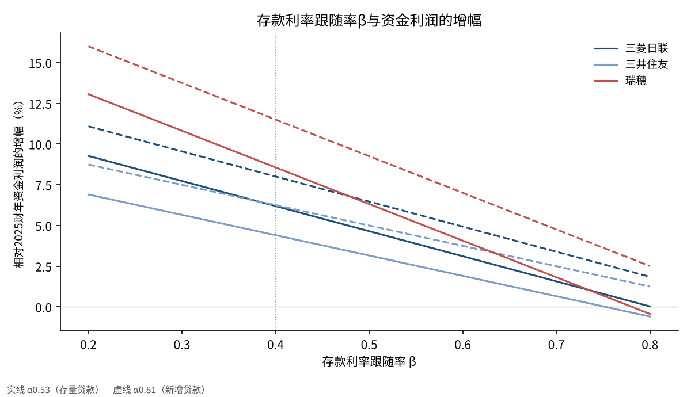

日本央行加息0.25%，大型银行的利息收入会增加百分之几？
2026年10月30日，日本银行（日本央行）将政策利率维持在1.25%左右。9名政策委员中有1人提议加息至1.5%，但被否决。
市场的走势以下一次0.25%的加息迟早会到来为前提。因此，本文把问题收窄为一个。
政策利率上调0.25%，三菱UFJ、三井住友、瑞穗这3家大型银行（日本三大银行集团）的资金利润，各自会增加百分之几？

问题与背景
资金利润，是指从贷款和有价证券收取的利息，减去为存款等支付的利息后的金额，相当于银行本业收益的核心。政策利率上调后，收取的利息和支付的利息都会增加，但增加的速度不同。这种速度差，正是加息推高银行利润的原因。
日本央行于2024年3月解除负利率，此后于2024年7月加息至0.25%，2025年1月至0.5%，2025年12月至0.75%，2026年6月至1.0%，2026年9月至1.25%[1]。10月30日的会议决定维持利率不变，以8比1的多数通过[1]。
3家大型银行中有2家披露了每次加息0.25%的效果。三井住友表示，资金利润第一年增加约1,100亿日元，第5年增加约1,500亿日元[2]；瑞穗表示，利息收支每年增加约1,200亿日元[3]。3家大型银行2025财年的净利润分别为：三菱UFJ 2.4272万亿日元，三井住友1.5830万亿日元，瑞穗1.2486万亿日元[2][3][5]。三菱UFJ没有给出每0.25%的数字，而是显示政策利率从0.5%升至1.0%期间，对税前利润的影响约为3,600亿日元[4]。
这里先定义一个专业术语。存款利率的跟随率（β），是指政策利率上升1时，存款利率上升多少的比率。β越小，银行所得的份额越大。同样，贷款利率的跟随率（α），是指政策利率上升1时，贷款利率上升多少的比率。α越大，银行收取的利息增加得越快。
日本央行对活期账户存款支付的利息（付息），在这一计算中也起着重要作用。付息是指银行存放在日本央行的资金所获得的利息，目前设定为与政策利率相同的1.25%[1]。吸收了存款却无法贷出的剩余资金，只要放在日本央行，就能产生与政策利率相同的利息。剩余资金越多的银行，越容易较早享受到加息的好处。

数据与方法
使用的是各家披露的2025财年（截至2026年3月）的资金利润，以及国内存款和贷款余额[2][3][5]。三菱UFJ国内存款185.2万亿日元、国内贷款78.1万亿日元，三井住友银行国内存款135.9万亿日元、国内贷款71.6万亿日元，瑞穗国内日元存款123.9万亿日元、国内贷款57.8万亿日元。
每1次加息带来的资金利润增加额，用以下3项之和来近似。
(1) 贷款：贷款余额×0.25%×贷款利率的跟随率（α）
(2) 剩余存款：假设存款减去贷款后的余额存放于日本央行活期账户，这部分的收益率上升幅度与政策利率相同（付息与政策利率处于同一水平）
(3) 存款：减去存款余额×0.25%×存款利率的跟随率（β）
α和β的基准值根据实际利率变动设定。3家大型银行的活期存款利率，在政策利率每上调0.25%时各上调0.10%（2025年1月和12月、2026年6月和9月）[6]。β的基准设为0.4。贷款方面，日本央行统计显示，国内银行的贷款约定平均利率（存量）从解除负利率到2026年8月上升了0.72%[7]。用它除以同期政策利率的上调幅度1.35%，得到0.53，作为α的基准。若只看新增贷款，同期从0.683%升至1.782%，上升了1.10%[7]，比率为0.81。现有贷款会从固定利率的部分开始依次置换，因此存量利率的上升比新增贷款慢。
也看一下存款方面的数字。全国银行活期存款的平均利率，从2024年2月的0.001%升至2026年10月的0.331%[7]。1年期定期存款（300万日元以下）从0.005%升至0.486%[7]。
把这一公式套用到三井住友披露的前提（日元贷款约70万亿日元、存款约130万亿日元），结果约为1,128亿日元。与该公司给出的第一年约1,100亿日元基本一致，因此我认为公式的形式没有大的偏差。
结果
基准情形（α＝0.53，β＝0.4）下的测算如下。表中的增长率表示加息后第1年的效果。
| 银行 | 国内存款 | 国内贷款 | 资金利润增加额（测算） | 2025财年资金利润 | 增长率 | 公司披露 |
|---|---|---|---|---|---|---|
| 三菱UFJ | 185.2万亿日元 | 78.1万亿日元 | 约1,860亿日元 | 30,062亿日元 | 6.2% | 0.5→1.0%约3,600亿日元（税前） |
| 三井住友 | 135.9万亿日元 | 71.6万亿日元 | 约1,197亿日元 | 27,196亿日元 | 4.4% | 第一年约1,100亿日元 |
| 瑞穗 | 123.9万亿日元 | 57.8万亿日元 | 约1,179亿日元 | 13,770亿日元 | 8.6% | 每年约1,200亿日元 |
对问题的回答是：在基准情形下，资金利润大约增加4～9%。三菱UFJ的约1,860亿日元，也接近把该公司披露的0.5%幅度约3,600亿日元除以2次加息所得的约1,800亿日元。
增长率之所以不同，是因为存款与贷款之间的差额大小不同。三菱UFJ的国内存款中有超过100万亿日元没有用于贷款，这部分放大了加息的效果。瑞穗的资金利润相对于存款本来就小，同样的0.25%，增长的比率也显得更高。三井住友的贷款比率高，剩余存款带来的收益相对较小。不过，三井住友披露称，效果到第5年会增至约1,500亿日元[2]。这是因为固定利率贷款会逐步置换为利率更高的贷款。
假设税率为30%，换算为税后，增加额为三菱UFJ约1,302亿日元，三井住友约838亿日元，瑞穗约825亿日元。相对于2025财年的净利润，分别约为5.4%、5.3%、6.6%。按此计算，一次加息会使净利润增加约5～7%。

敏感性分析
结果会因β和α的设定而大幅变化。我把β取0.3、0.4、0.5、0.7，α取0.53和0.81（新增贷款利率的跟随率）进行了变动[7]。
| 条件 | 三菱UFJ | 三井住友 | 瑞穗 |
|---|---|---|---|
| α0.53，β0.3 | 7.7% | 5.7% | 10.8% |
| α0.53，β0.4（基准） | 6.2% | 4.4% | 8.6% |
| α0.53，β0.5 | 4.6% | 3.2% | 6.3% |
| α0.53，β0.7 | 1.6% | 0.7% | 1.8% |
| α0.81，β0.4 | 8.0% | 6.2% | 11.5% |
| α0.81，β0.7 | 3.4% | 2.5% | 4.8% |
β从0.4升至0.7时，3家银行的增长率都降到一半以下。反过来，如果贷款利率像新增贷款那样快速上升，增长率会再增加约2～3个百分点。8种情形中，最低为0.7%，最高为13.8%。
在以往的加息中，存款利率的跟随率一直在0.4左右。不过，全国银行活期存款的平均利率，相对于政策利率1.35%的上调幅度，仅上升了0.33%，比率约为24%[7]。定期存款约为36%。存款构成不同，跟随的速度也相差很大。活期存款越多的银行β越低，定期存款比例越高β就越高。
α这一侧也有幅度。日本央行的《金融体系报告》分析认为，与市场利率挂钩的贷款比例越高的大型银行，现有贷款利率的上升幅度越大[8]。与中小银行相比，3家大型银行的α可能偏向高于基准0.53的一侧。

讨论
也有相反的看法。利率上升后，存款人会把资金从活期存款转向定期存款或投资信托（公募基金）。这样一来，银行支付的利息会比公式增加得更快，β会高于0.4。民间的研究也假设，政策利率每上调0.25%，活期存款利率上调0.1%，浮动利率住房贷款上调0.25%[9]。瑞穗管理层也说明，由于定期存款的成本负担，预计效果每年会略低于1,200亿日元[3]。
另一点是存款本身外流的风险。从2026年11月2日起，3家大型银行的活期存款利率将上调至0.5%。据报道，这是1992年8月以来的水平[6]。如果资金流向利率更高的其他金融机构或日本国债，公式前提中的存款余额就会减少。
这一测算也有局限。第1，我假设剩余存款全部存放于日本央行活期账户，但实际上也被分配到国债和海外资产。第2，国内存款和贷款余额的口径各公司不同，严格来说无法比较。第3，没有考虑贷款利率上升导致借款人破产增加的风险。第4，也没有考虑海外利率和汇率的变动。3家银行的海外贷款规模都很大，整体利润也会受到这些因素的影响。
验证答案的基准，是2026年11月中旬公布的3家银行的中期财报。看它们在9月加息至1.25%之后，把全年资金利润预期上调多少，就能更接近β和α的实际水平。
结论
测算结果是：日本央行加息0.25%一次，3家大型银行的资金利润在基准情形下大约增加4～9%。按金额计算，每家约1,200亿～1,900亿日元。
不过，这个数字在很大程度上取决于存款利率跟随的速度。如果β升至0.7，增长率会降到1～2%左右。加息能否成为银行的顺风，与其说取决于利率水平，在很大程度上更取决于存款人把钱转向哪里。
我的看法
我持有三菱UFJ、里索那（Resona）、三井住友信托、三井住友这4家银行的股票。买入时长期利率（10年期日本国债收益率）大约在0.75%～1%，我认为长期利率超过2%时，我的判断就算是对的。我原本也认为10月有可能加息，但结果是维持不变。
卖出的条件，是我判断利率进入下行阶段的时候；只要利率没有下降，我就继续持有。所以即使这次维持不变，我对这4家银行的持有方式也不会改变。看银行股时，我只看日本央行的判断和长期利率，而不是财报。
出处
- 日本银行（Bank of Japan）《关于当前货币政策运作》2026年10月30日 https://www.boj.or.jp/mopo/mpmdeci/mpr_2026/k261030a.pdf
- 三井住友金融集团（SMFG）《2025财年决算 投资者说明会资料》2026年5月18日 p.9 https://www.smfg.co.jp/investor/financial/latest_statement/2026_3/2026_fy_setumei.pdf
- 瑞穗金融集团（Mizuho）《2025财年决算 公司说明会资料》2026年5月19日 p.27、p.36 https://www.mizuho-fg.co.jp/investors/financial/briefing/pdf/20260519_1.pdf
- 三菱UFJ金融集团（MUFG）《MUFG的优势》2026年1月 p.26 https://www.mufg.jp/dam/ir/investors/seminar/pdf/slides260121_ja.pdf
- 三菱UFJ金融集团（MUFG）《2025财年 决算要点》2026年5月15日 https://www.mufg.jp/dam/ir/fs/2025/pdf/highlights2603_ja.pdf
- 瑞穗银行《关于日元活期存款利率的调整》2026年9月18日 https://www.mizuhobank.co.jp/release/pdf/20260918_2release_jp.pdf
- 日本银行 时间序列统计数据检索网站（存款与贷款相关利率）2026年10月19日更新 https://www.stat-search.boj.or.jp/
- 日本银行《金融体系报告》2026年4月 https://www.boj.or.jp/research/brp/fsr/data/fsr260421a.pdf
- 瑞穗研究与技术公司（Mizuho Research & Technologies）调查报告 2026年6月8日 https://www.mizuhobank.co.jp/corporate/mhri/research/report/2026-0057/index.html
照片：Kate Branch、Mohamed Jamil Latrach（Unsplash）。图表由YUKI CAPITAL制作
每天的数字和判断，我都记录在X上。